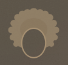

中元工房
PWNK — Osaka
刻まれる光。
TEXTURE & MATERIAL

SHIKKUI / 漆喰

MATERIAL / 素材

SCULPTURE / 造形

MORTEX / モールテックス
ABOUT ME

中元 正
中元工房 代表 / 1級左官技能士 / 1級建築施工管理技士
29年のキャリアを持つ左官職人。伝統的な漆喰塗りから、モールテックスやモルタル造形といった現代的な特殊意匠まで幅広く手掛ける。1級左官技能士としての確かな技術に加え、1級建築施工管理技士の視点から、現場の品質管理と美学の両立を追求している。大阪・堺を拠点に、光と影が刻まれる壁を創造し続けている。
EST. 1997 — SAKAI, OSAKA
LOCATION
SAKAI / OSAKA
大阪府堺市を拠点に関西一円対応
CONTACT
LET'S TALK ABOUT YOUR WALL.
施工に関するご相談、お見積り依頼はLINE公式アカウントより承っております。
CONNECT VIA LINE